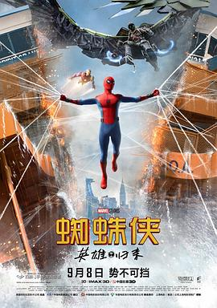

7.3
蜘蛛侠：英雄归来
Spider-Man: Homecoming
2017
美国
评分 7.3
导演:
乔·沃茨
演员:
汤姆·赫兰德 / 小罗伯特·唐尼 / 玛丽莎·托梅 / 迈克尔·基顿 / 雅各布·巴特朗 / 托尼·雷沃罗利 / 赞达亚
类型:
冒险,动作,科幻
剧情简介
在内战事件后，彼得·帕克获得了托尼·斯塔克的高度关注，被安排进入斯塔克工业，以实习生的名义接受指导。他渴望证明自己，希望尽快成为真正的复仇者成员，但托尼的谨慎态度和特工哈皮的日常监视令他倍感压抑。彼得在学校生活与秘密身份之间摇摆，既想做一个普通学生，又无法忽视体内的正义冲动。当一次小规模的劫案中出现陌生的高科技武器时，彼得意识到背后可能隐藏着更大的威胁。他按捺不住冲动，独自追查线索，最终找到黑市武器交易的来源——秃鹫。秃鹫依靠从纽约战场残骸中收集到的外星科技打造武器系统，悄然建立起自己的黑色帝国。彼得在追查过程中屡屡受挫，也因为经验不足而频频陷入险境。随着调查深入，他与同学莉兹的关系逐渐升温，却在一次家庭拜访中惊觉秃鹫竟是莉兹的父亲。这一事实让彼得陷入道德与责任的双重挣扎。他必须在保护心爱之人、维持学生生活，以及阻止秃鹫的危险计划之间做出抉择。影片通过校园青春与英雄冒险的结合展现一个仍在成长的超级英雄，描绘了彼得如何在犯错、学习与坚持中真正理解“成为蜘蛛侠”的意义。